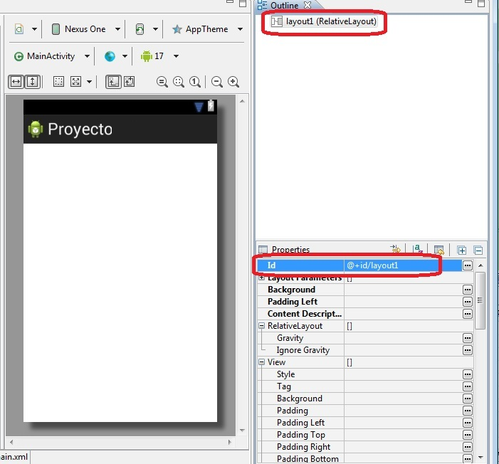
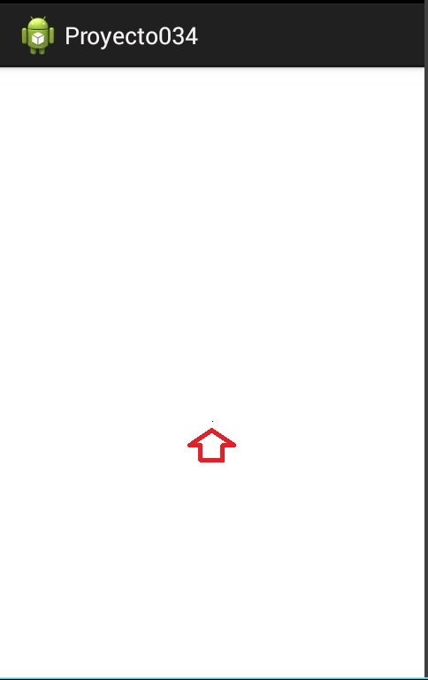

36 - Dibujar: graficar un píxelYa se encuentra disponible el nuevo tutorial para aprender android con el nuevo entorno Android Studio propuesto por Google y que remplaza a Eclipse. |
Graficar un píxel de color negro en medio de la pantalla del dispositivo.
Para poder hacer esta simple tarea debemos seguir una serie de pasos:
1 - Creamos un proyecto llamado: proyecto034
Lo almacenamos en el paquete: com.androidya.proyecto034
Borramos el TextView que agrega automáticamente el plug-in de Eclipse y a definir un id para el RelativeLayout (le asignamos como Id el valor @+Id/layout1) y grabamos las modificaciones:
Ahora codificamos la clase donde se encuentra toda la lógica para encender el píxel:
package com.androidya.proyecto034;
import android.app.Activity;
import android.content.Context;
import android.graphics.Canvas;
import android.graphics.Paint;
import android.os.Bundle;
import android.view.Menu;
import android.view.View;
import android.widget.RelativeLayout;
public class MainActivity extends Activity {
@Override
protected void onCreate(Bundle savedInstanceState) {
super.onCreate(savedInstanceState);
setContentView(R.layout.activity_main);
RelativeLayout layout1 = (RelativeLayout) findViewById(R.id.layout1);
Lienzo fondo = new Lienzo(this);
layout1.addView(fondo);
}
@Override
public boolean onCreateOptionsMenu(Menu menu) {
// Inflate the menu; this adds items to the action bar if it is present.
getMenuInflater().inflate(R.menu.activity_main, menu);
return true;
}
class Lienzo extends View {
public Lienzo(Context context) {
super(context);
}
protected void onDraw(Canvas canvas) {
int ancho = canvas.getWidth();
int alto = canvas.getHeight();
Paint pincel1 = new Paint();
pincel1.setARGB(255, 0, 0, 0);
canvas.drawPoint(ancho / 2, alto / 2, pincel1);
}
}
}
Debemos crear una clase que herede de la clase View (todos los controles visuales en Android heredan de esta clase) y sobreescribir el método onDraw. El método onDraw se ejecuta cuando tiene que graficarse. Para acceder a las primitivas gráficas hay una clase llamada Canvas que encapsula todo lo relacionado a pintar píxeles, líneas, rectángules etc.:
protected void onDraw(Canvas canvas) {
int ancho=canvas.getWidth();
int alto=canvas.getHeight();
Paint pincel1=new Paint();
pincel1.setARGB(255,0,0,0);
canvas.drawPoint(ancho/2, alto/2, pincel1);
}
Lo primero que hacemos en el método onDraw es obtener el ancho y alto en píxeles del dispositivo mediante los métodos getWidth() y getHeight() que nos provee la clase Canvas. Seguidamente creamos un objeto de la clase Paint. Llamamos al método setARGB para definir el color del pincel (el primer parámetro indica el valor de transparencia con 255 indicamos que no hay transparencia, luego indicamos la cantidad de rojo, verde y azul.
Por último debemos llamar al método drawPoint que dibuja el píxel en la columna, fila y pincel que le pasamos como parámetros.
Como podemos observar la clase Lienzo hereda de View e implementa el constructor donde llegará la referencia del Activity donde se inserta:
class Lienzo extends View {
public Lienzo(Context context) {
super(context);
}
protected void onDraw(Canvas canvas) {
int ancho=canvas.getWidth();
int alto=canvas.getHeight();
Paint pincel1=new Paint();
pincel1.setARGB(255,0,0,0);
canvas.drawPoint(ancho/2, alto/2, pincel1);
}
}
Por último en el método onCreate del Activity obtenemos la referencia del RelativeLayout que tiene el Activity. Creamos un objeto de la clase Lienzo (llamado fondo) y agregamos el objeto fondo al RelativeLayout llamando al método addView:
public void onCreate(Bundle savedInstanceState) {
super.onCreate(savedInstanceState);
setContentView(R.layout.main);
RelativeLayout layout1 = (RelativeLayout) findViewById(R.id.layout1);
Lienzo fondo = new Lienzo(this);
layout1.addView(fondo);
}
Cuando ejecutemos el programa veremos un píxel en medio de la pantalla de color negro:
Este proyecto lo puede descargar en un zip desde este enlace: proyecto034.zip